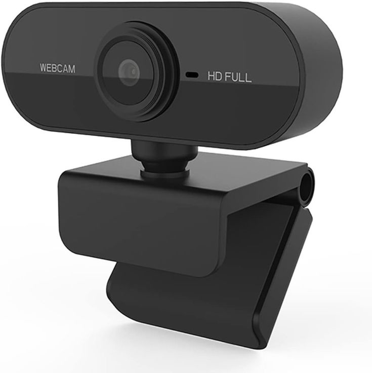
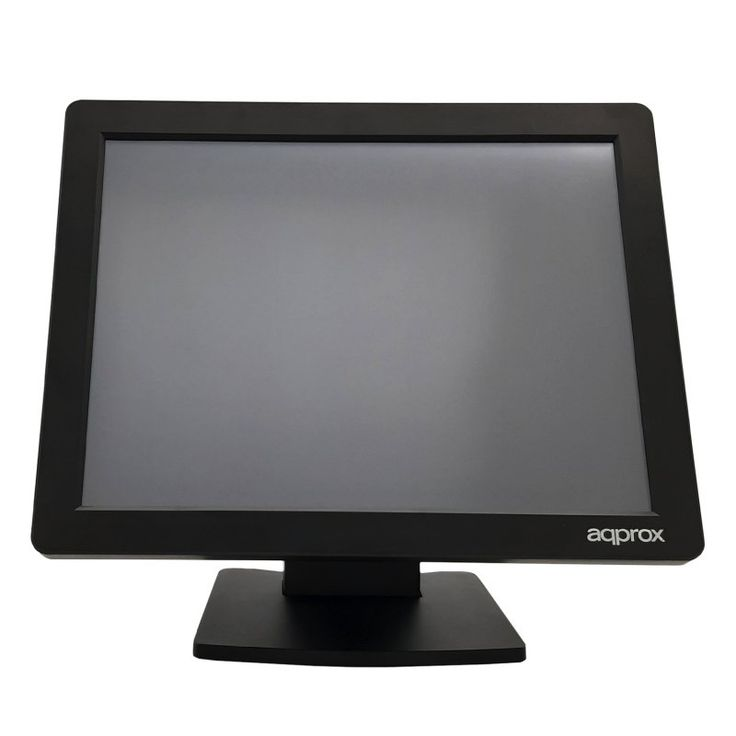

¿Qué son los dispositivos de entrada?
Son dipositivos los cuales permiten que el usuario ingrese informacion a la computadora
Ejemplos de dispositivos de entrada
| Dispositivo | Imagen |
|---|---|
| Teclado | |
| Microfono | |
| Webcam |  |
| Mouse | |
| Pantalla tactil |  |
¿Qué es un software?
Es el conjunto de los programas de cómputo, procedimientos, reglas, documentación y datos asociados, que forman parte de las operaciones de un sistema de computación.Designa todo componente intangente(y no fisica) que forma parte de dispositivos
Tipos de software
Software de sistema
Es uno de los conceptos básicos que deben saber quiénes operan computadoras o laptops. Después de todo, es de este grupo de programas informáticos que va a depender que puedas aprovechar todas las funcionalidades de tu computadora sin encargarte de los detalles internos del hardware
Ejemplo
Sistemas operativos

Software de programacion
Un conjunto de herramientas y utilidades que permiten a los programadores desarrollar programas informáticos utilizando diferentes lenguajes de programación o bases de datos. Incluye de manera general: editores de texto, compiladores, intérpretes, enlazadores y depuradores.
Ejemplo
Compiladores o editores multiples

Software de aplicacion
Es aquel que permite a los usuarios llevar a cabo una o varias tareas específicas, en cualquier campo de actividadsusceptible de ser automatizado o asistido, con especial énfasis en los negocios.
Ejemplo
Paint.
Software de gestión
Es un sistema informático integrado por múltiples herramientas que individualmente se utilizan para ejecutar tareas administrativas y que, en conjunto, simplifican los procesos operativos, productivos y burocráticos de una organización.
Ejemplo
Microsoft SharePoint

Las telecomunicaciones y el trabajo distribuido y colavorativo
Telecomunicaciones
Enviar mensajes de un lugar a otro,en pocas palabras son todas las formas de comunicarse a distintas
pueden ser de forma de palabras, somidos, imagenes o datos en forma de impulso o señal.
Trabajo distributibo
Forma de definir el conjunto de tareas y de agruparse, lograr dividir el trabajo, dos formas, realizar un tipo
de tarea y realizan varias tareas a la vez.
Trabajo colaborativo
Exista comunicacion y a la vez que intercambie ideas para tener una idea mas amplia de informacion. La comunicacion e interaccion con los demas personas que laboran en las tareas, permite que tengas distintas ideas para sacar lo mas importante.
Para mas informacion